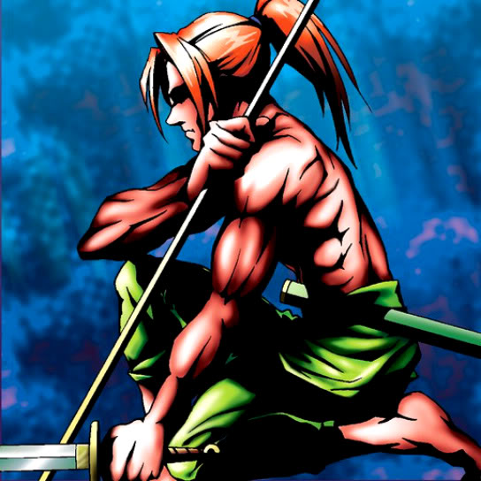

Kagemusha of the Blue Flame

STATS
ATK: 800
DEF: 400DECK COST
Deck Cost per Card: 12Fusion List (47 Possible Fusions)
- Kagemusha of the Blue Flame + Abyss Flower = Bean Soldier
- Kagemusha of the Blue Flame + Ancient Jar = Minomushi Warrior
- Kagemusha of the Blue Flame + Candle of Fate = Charubin the Fire Knight
- Kagemusha of the Blue Flame + Charubin the Fire Knight = Flame Swordsman
- Kagemusha of the Blue Flame + Clown Zombie = Armored Zombie
- Kagemusha of the Blue Flame + Cyber-Stein = Cyber Soldier
- Kagemusha of the Blue Flame + Dancing Elf = Celtic Guardian
- Kagemusha of the Blue Flame + Dark Prisoner = Minomushi Warrior
- Kagemusha of the Blue Flame + Darkworld Thorns = Bean Soldier
- Kagemusha of the Blue Flame + Dharma Cannon = Cyber Soldier
- Kagemusha of the Blue Flame + Dragon Statue = Flame Swordsman
- Kagemusha of the Blue Flame + Dragon Zombie = Sword Arm of Dragon
- Kagemusha of the Blue Flame + Fiend's Hand = Zombie Warrior
- Kagemusha of the Blue Flame + Fiend Reflection #1 = Crimson Sunbird
- Kagemusha of the Blue Flame + Fiend Sword = Flame Swordsman
- Kagemusha of the Blue Flame + Fire Reaper = Zombie Warrior
- Kagemusha of the Blue Flame + Firegrass = Charubin the Fire Knight
- Kagemusha of the Blue Flame + Flame Ghost = Zombie Warrior
- Kagemusha of the Blue Flame + Flame Snake = Charubin the Fire Knight
- Kagemusha of the Blue Flame + Haniwa = Minomushi Warrior
- Kagemusha of the Blue Flame + Hinotama Soul = Charubin the Fire Knight
- Kagemusha of the Blue Flame + Jinzo #7 = Cyber Soldier
- Kagemusha of the Blue Flame + Kageningen = Charubin the Fire Knight
- Kagemusha of the Blue Flame + Laughing Flower = Bean Soldier
- Kagemusha of the Blue Flame + Lesser Dragon = D. Human
- Kagemusha of the Blue Flame + Little Chimera = Flame Cerebrus
- Kagemusha of the Blue Flame + Man-Eating Plant = Bean Soldier
- Kagemusha of the Blue Flame + Masaki the Legendary Swordsman = Flame Swordsman
- Kagemusha of the Blue Flame + Mech Mole Zombie = Zombie Warrior
- Kagemusha of the Blue Flame + Mechanical Spider = Cyber Soldier
- Kagemusha of the Blue Flame + Milus Radiant = Flame Cerebrus
- Kagemusha of the Blue Flame + Monsturtle = Giant Turtle Who Feeds on Flames
- Kagemusha of the Blue Flame + Muka Muka = Minomushi Warrior
- Kagemusha of the Blue Flame + Mushroom Man #2 = Flame Swordsman
- Kagemusha of the Blue Flame + Mushroom Man = Bean Soldier
- Kagemusha of the Blue Flame + Phantom Ghost = Zombie Warrior
- Kagemusha of the Blue Flame + Pot the Trick = Minomushi Warrior
- Kagemusha of the Blue Flame + Queen's Double = Charubin the Fire Knight
- Kagemusha of the Blue Flame + Shadow Specter = Zombie Warrior
- Kagemusha of the Blue Flame + Silver Fang = Flame Cerebrus
- Kagemusha of the Blue Flame + Skull Servant = Zombie Warrior
- Kagemusha of the Blue Flame + Steel Scorpion = Cyber Soldier
- Kagemusha of the Blue Flame + Torike = Flame Cerebrus
- Kagemusha of the Blue Flame + White Dolphin = Wow Warrior
- Kagemusha of the Blue Flame + Wicked Dragon with the Ersatz Head = Dragon Statue
- Kagemusha of the Blue Flame + Wings of Wicked Flame = Flame Swordsman
- Kagemusha of the Blue Flame + Yamatano Dragon Scroll = Dragon Statue